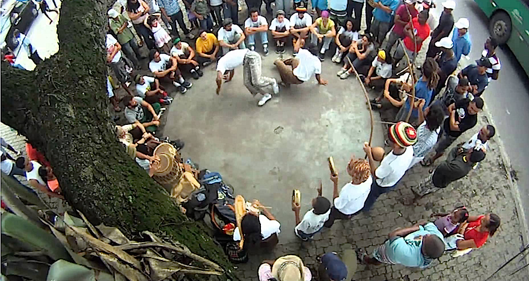

Roda |
||
The capoeira roda is a circle of capoeiristas with a musical battery in which the capoeira is thrown, touched and sung. The wheel serves as much for the game, fun and spectacle as for capoeiristas to apply what they learned during the training. Capoeiristas appear on the capoeira wheel singing and clapping in the rhythm of the berimbau while two capoeiristas play capoeira. The game between two capoeiristas can finish at the command of the berimbau player or when some other capoeirista of the roda buys the game, that is, enters between the two and initiates a new game with one of them. |
||
|  | ||
In general, the purpose of the capoeira game is not to knock out or destroy the opponent. The greatest goal of the capoeirista when entering a wheel is the fall, that is, to knock down the opponent without being struck, preferably with a creep. Most often, between the game of a more experienced capoeirista and a novice, the experienced capoeirista prefers to show his superiorityararcando the blow in the opponent, that is, stopping the blow a moment before completing it. Between two experienced capoeiristas the game could be much more aggressive and the consequences more serious. |
||
Ginga |
||
The ginga is the basic movement of capoeira, but besides the ginga are very common the kicks in rotation, creeps, flourishes (as the aú or the banana tree), blows with the hands, halts, elusive, acrobatics (like the somersault), swings supported on the hands or the head and movements of great elasticity. |
||
Batisado |
||
The batizado, baptism, is a solemn and festive capoeira roda, where new students receive their first rope and other students can pass to higher ranks. In some occasions you can see graduates and teachers receiving advanced degrees, a moment considered honorable for the capoeirista. The baptized party to the command of the capoeirista more graduated of the group, be it master, foreman or professor. Students play with a trained capoeirista and should try to defend themselves. Usually the game ends with the fall of the student, when it is considered baptized, but the formed capoeirista can judge the fall unnecessary. In the case of more advanced students, the game may be with more than one graduate, or even with all graduates present, for the graduations. |
||
Apelido |
||
Traditionally the baptized would be the moment in which the capoeirista receives or makes official its apelido, the nickname or name of the capoeira player. Most capoeiristas are known in the community more by their respective nicknames than by their own names. Nicknames can arise from numerous reasons, such as a physical characteristic, a particular skill or difficulty, an irony, the city of origin, etc. The custom of the nickname came about at a time when capoeira was illegal. Capoeiristas avoided saying their names to avoid problems with the police and presented themselves to other capoeiristas or in the wheels by their nicknames. In this way a capoeirista could not reveal the names of his companions to the police, even if he was arrested and tortured. Nowadays the nickname continues a strong tradition in capoeira, although it is not necessary anymore. |
||
Music |
||
Music is a fundamental component of capoeira. It was introduced as a way to deceive the enslavers, making them believe that the slaves were dancing and singing, when in fact they were developing and training a martial art to defend themselves. A fundamental component of a capoeira wheel, it determines the pace and style of the game being played. The music is created by drums and singing (solo or chorus), usually accompanied by a clap of hands. The bateria are traditionally composed of three berimbaus, two tambourines and an atabaque, but the format may vary by excluding or including some instrument such as agogô and ganzuá. One of the berimbaus sets the rhythm and game of capoeira to be developed on the wheel. In this way, it is the music that commands the capoeira wheel, not only in rhythm but also in content |
||
Songs |
||
The capoeira songs are divided into solo parts and chorus responses, formed by all the other capoeiristas present naroda. Depending on their content they can be classified as litanies, chulas, corridos or quatrains. The litany, or regret, is used only at the beginning of the capoeira wheel. Part of the long yê cry, followed by a solo narrative sung in solemn tone. It is usually sung by the most respected or graduated capoeirista of the wheel. At this moment there is no game, no clapping and some instruments are not played. The narrative is followed by the traditional tributes made by the soloist (to God, to his master, to him who taught him and to any other important character or factor relevant to capoeira, such as malandragem), answered intercaladamente by the praise of the choir and the beginning of the palms and instruments. The capoeira game can only start after the end of the litany. The chula is a chant in which the solo part is much longer than the chorus's response. While the soloist sings ten, twelve, or even more verses, the chorus responds with only two or four verses. The chula can be sung at any point on the wheel. The corrido, the most common musical form of the capoeira wheel, is a song where the solo part and the choir response are equivalent, in some cases the number of verses of the choir surpassing the soloist verses. It can be sung at any point on the wheel and its verses can be modified and improvised during the game to reflect what is happening during the wheel, or to pass some warning to one of the other capoeiristas. The block is composed of the same verse repeated four times, be it three soloist verses and a choir response, either the solo part and the response interspersed. It can be sung at any point on the wheel. The songs of capoeira have subjects of the most varied. Some songs are about stories of famous capoeiristas, others can speak of the daily life of the community. Some songs comment on what is happening during the capoeira wheel, others ramble on about life or a lost love. Still others are cheerful and talk about silly things, sung just for fun. Basically there are no rules and students are encouraged to create their own songs. Capoeiristas change the songs often according to what happens on the wheel or outside it. A good example is when a novice capoeirista demonstrates remarkable skill during the game and the soloist sings the verse "and the boy is good" followed by the chorus with the verse "hit him." The lyrics are constantly used to pass messages to one of the capoeiristas, most often in a veiled and subtle way. |
||